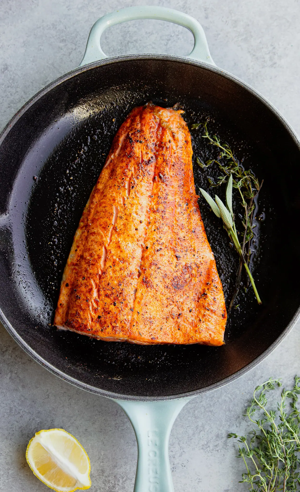
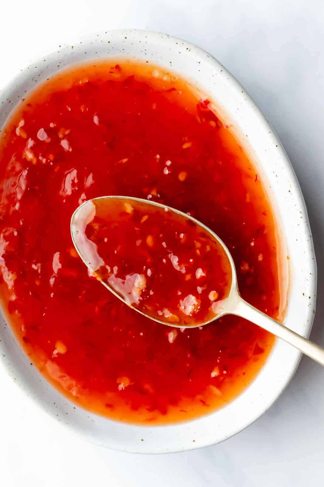
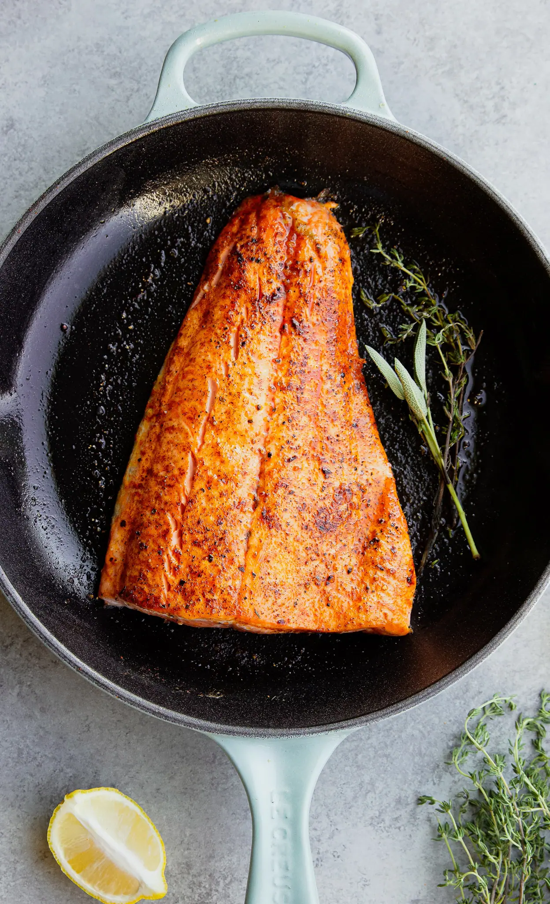
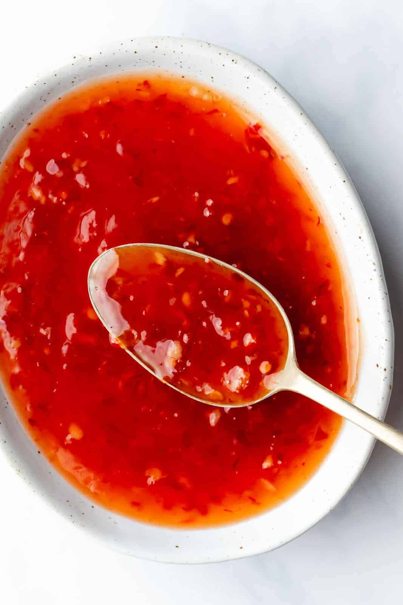

Preheat oven to 400°F (200˚C).
In a bowl, mix together the salmon, chili sauce, and the scallions.
Place the fillets on a baking tray lined with parchment paper. Spoon any leftover sauce on top of the salmon.
Bake for 12-15 minutes, until the salmon is cooked but still tender.
Enjoy!
4 oz salmon, 3 fillets
½ cup chili sauce
¼ cup fresh scallions, chopped
Calories 107
 



https://tasty.co/recipe/3-ingredient-chili-glazed-salmon